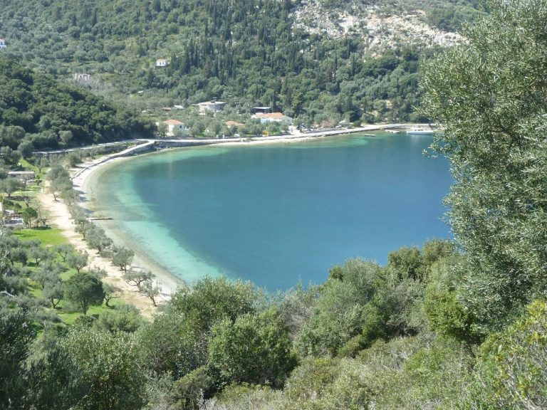

terenceithaque

Dexa is a beach located 2 kilometers from vathy, on the right side of the port.
The beach offers natural shaded areas for relaxing sunbathing. It is quite unique for its transparent blue waters that allow an experience in optimal conditions.
The beach has some tourist facilities, including a bar if you are interested in drinks.
Are you looking for the content of a particular beach ? Click right here to access beaches index
Not on the page you are looking for ? Go to the index.
Do you have questions about the content of the site updates? Click here to know everything about updates.
We continue right here
Learn more on Dexa on Greeka